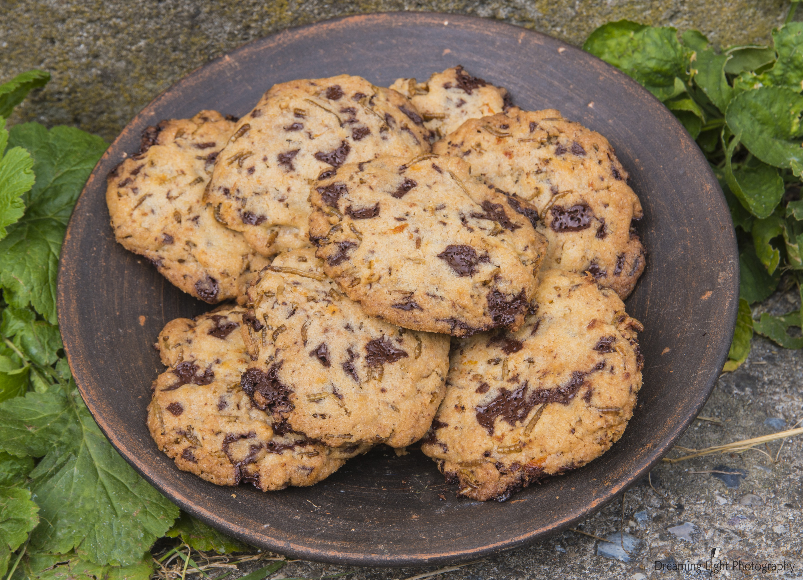
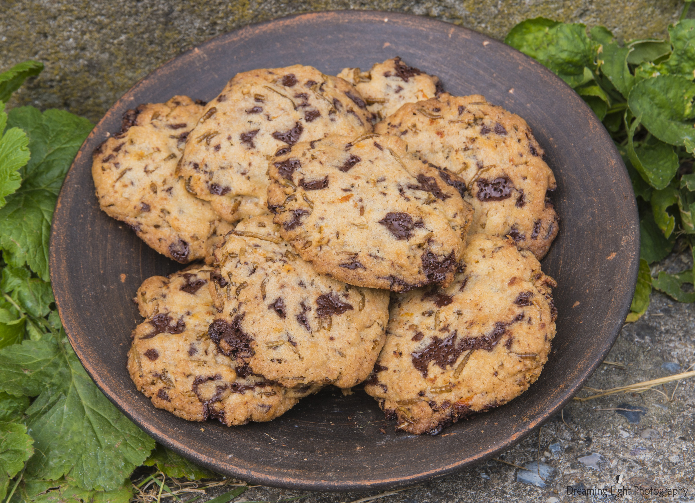

Eating insects is not new for us
– and it is the future.
Still, a lot of us find
it disgusting. We want to find out more we do
not want to sell you anything. We are here to
share our curiosity, so join us in exploring a
taste of insects!
click to read more

You can’t say “insects taste like …” - that would be the same as
saying all mammals taste the same. Some ants are said to taste
like lemongrass and the larvae of the Capricorn beetle is
similar to an oily shrimp.
click to read more
The production of livestock now takes up nearly a third of the earth’s land.
One fifth of the greenhouse gas is being produced only by the meat industry.
If we are to have any hope of a bright future, we need to radically change our food production.
click to read more
If you're looking for a exciting way
to get insects
into your diet,
then this is the page for you!

 

If you want to read more about insect eating related topics
then check out these sites!
2018 All Right Reserved